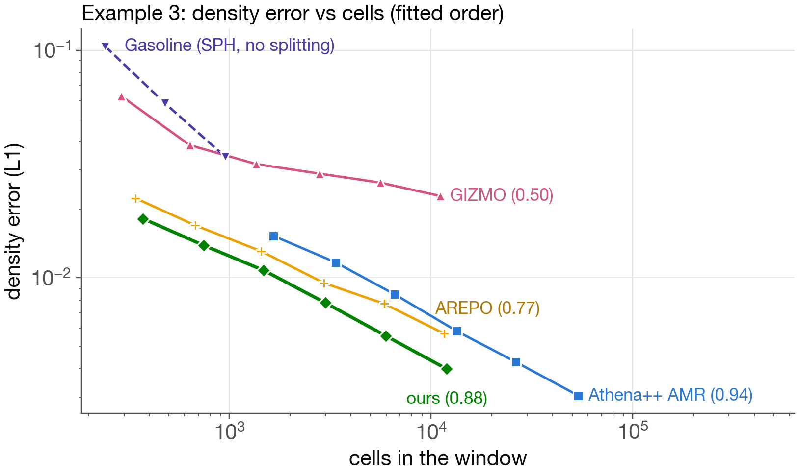

Supersonic flow past an obstacle on a moving Voronoi mesh refined by our splitting.
Abstract
Moving-mesh solvers let their Voronoi cells move with the flow, but in expanding regions the cells
grow and must be split to keep resolution. The standard split shares the parent's state between
its two daughters by volume. This conserves mass, but it introduces an error that does not shrink
as the mesh is refined. We instead transfer mass, momentum and energy through the exact geometric
overlap between the old and new cells, with a linear reconstruction that makes the transfer exact
for linear fields. The method conserves to round-off and is second-order accurate. On an
expanding-flow benchmark it has the lowest density error per cell among five fluid codes, and
behind a supersonic obstacle it keeps the recirculating wake that is lost without splitting.
Results
Mach 2 flow past a circular obstacle (red: backflow). Without splitting the cells behind
the obstacle drain and the wake is lost; with our splitting the recirculation zone is kept,
with half the velocity error of no splitting against the fixed-mesh reference.

Expanding-flow benchmark: density error against the number of cells, compared with
AREPO, Athena++ (adaptive mesh refinement), GIZMO and Gasoline.
Background: splitting in AREPO
A cell split in AREPO: the new cell is placed almost on top of its parent, and mesh
regularization moves the pair apart over the following time steps.